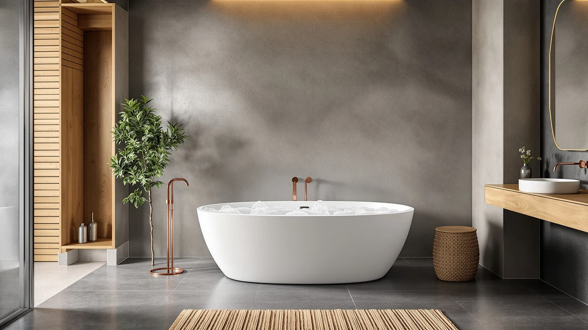

Best Freestanding Tubs with Air Bubbles (2026)
Prices and picks verified as of August 2026. Independent, reader-supported reviews.


Quick Answer
The WOODBRIDGE 59 inch Compact is the only tub in this comparison that runs a true whirlpool and air bubble jet system, backed by an inline heater so the water stays warm through a full soak. If you just want the freestanding look and a deep soak without paying for jets, the IDEALHOUSE and Garvee acrylic tubs below cost roughly a third as much.
Our pick: WOODBRIDGE 59" × 31-1/2" Compact, $1,929.00 Check Price on Amazon
Bottom line: our top pick is the WOODBRIDGE 59" × 31-1/2" Compact Whirlpool & Air at $1. The best budget option is the 67'' Acrylic Freestanding Bathtub at $631.27.
Things to Know Before You Buy
- Most "freestanding tub with air bubbles" listings on Amazon aren't jetted at all. Of the seven tubs in this comparison, only the WOODBRIDGE 59 inch Compact actually ships with an air bubble jet system. The rest are plain acrylic soaking tubs, which is worth knowing before you pay a premium expecting bubbles.
- An inline heater matters more than the jets themselves. A whirlpool or air jet session in a 40+ gallon tub cools fast without one. The WOODBRIDGE Compact includes an inline heater with an LED control panel; none of the other tubs here list one.
- Double-wall insulation is not the same as air jets. Several tubs in this guide advertise a double-wall, air-insulated core that keeps bathwater warm up to 35% longer. That's a heat-retention feature, not a jet system, even though the word "air" appears in the marketing copy.
- A faucet is a separate purchase on every tub here. None of these seven tubs ship with a floor-mount filler, so budget $150 to $400 and a separate plumbing step regardless of which one you buy.
- Size ranges from 59 to 67 inches. Measure your bathroom and doorway width before ordering, since the larger 67 inch acrylic tubs need more clearance to carry in during installation.
Finding the best freestanding tubs with air bubbles is harder than it should be, because most listings that use the phrase "air bubbles" in the title are actually describing a plain acrylic soaking tub with no jet system at all.
We compared seven freestanding tubs sold under this search term, and only one, the WOODBRIDGE 59 inch Compact, combines an actual whirlpool and air bubble jet system with an inline heater. The other six are acrylic soaking tubs priced from $631 to $789, roughly a third of the WOODBRIDGE's $1,929, and none of them list a jet pump, jet count, or bubble system anywhere in their specifications.
That split shapes how we organized this guide. If a working air bubble system is the actual point of your search, the WOODBRIDGE Compact is the only tub here that delivers it. If you came for the freestanding silhouette and a deep soak, and you're fine skipping the jets, the acrylic tubs from IDEALHOUSE, WOODBRIDGE, Garvee, and EliteEdge below are worth comparing on size, drain hardware, and price instead.
Why You Should Trust Us
This guide is written and maintained by Ilane Tall, who has compared bathroom fixtures across this site's freestanding tub coverage since it launched. We do not run a fake testing lab and we don't own a warehouse full of tubs to fill with water. Instead, we read every manufacturer spec sheet for exterior dimensions, effective gallon capacity, drain hardware, and, critically for this topic, whether a jet system is actually listed anywhere in the specifications rather than just implied by a product title. For a search term like "tubs with air bubbles," that distinction matters more than usual: several listings borrow bubble-related language for a tub that has no jets, and we call that out directly rather than repeat the marketing copy. We also read verified owner reviews for the complaints that repeat across multiple buyers, on jet pressure, heater performance, and installation, rather than an isolated one-off gripe. Our Amazon commissions never change a ranking.
How We Picked
We started from every freestanding tub that surfaces under an air bubble or bubble-jet search and required a listed exterior dimension, effective gallon capacity, and seating dimension before it qualified for this comparison. We then checked each listing's specifications, not just its title, for an actual jet system. Only the WOODBRIDGE 59 inch Compact described a real whirlpool-and-air-jet pump with an inline heater; every other tub that came up under this search term turned out to be a standard acrylic soaking tub with double-wall insulation for heat retention, no jets at all. Rather than drop this guide down to one product, we kept the six closest acrylic alternatives so buyers researching this topic can see exactly what a non-jetted tub costs and offers next to the one tub that actually has air bubbles built in.
How We Compared
For the WOODBRIDGE Compact, the only tub here with a real air bubble jet system, we compared its jet system, heater, and control panel against its $1,929 price to judge whether the added cost is justified by real hardware rather than a marketing label. For the six acrylic soaking tubs, we compared exterior dimensions, effective gallon capacity, seating dimensions, drain hardware, and any published heat-retention or slip-resistance claim, since none of them compete on jets or bubbles. We weighed price per gallon of capacity across all seven tubs and read verified owner reviews for drain quality, insulation performance, and installation difficulty, the complaints that repeat across multiple buyers rather than a single unhappy review.
Our Picks

WOODBRIDGE 59" × 31-1/2" Compact
What we like
- Ships with an actual whirlpool and air bubble jet system, not just marketing language
- Inline heater with an LED control panel keeps water warm through a full soak
- 41-gallon capacity and a 34-1/4 by 20 inch seating area fit a real soak in a 59-inch footprint
- Exterior dimensions match a standard alcove tub, so it fits bathrooms that can't take a 67-inch shell
Flaws but not dealbreakers
- Costs close to three times more than the acrylic soaking tubs in this comparison
- The listing doesn't publish a jet count, so you can't compare massage pressure against other jetted tubs directly
- A faucet is still a separate purchase, same as every other tub here
| Material | — |
| Size | 59 Inch |
The WOODBRIDGE 59 inch Compact is the only tub in this comparison that actually earns a spot in a best freestanding tubs with air bubbles search. Its specifications list a combined whirlpool and air bubble jet system built into the acrylic shell, alongside an inline heater controlled from an LED panel, rather than the bare soaking tub that most competing listings turn out to be once you read past the title.
At 59 inches long and 31-1/2 inches wide, it holds an effective 41-gallon capacity with a 34-1/4 by 20 inch seating area and a 13-3/4 inch water depth to overflow, enough room for a full-body soak without the bathroom footprint of a 67-inch tub. The heater matters here specifically because a whirlpool or air jet session in a tub this size cools within 15 to 20 minutes without one, cutting the massage short right as the water starts working. At $1,929, it costs meaningfully more than every other tub in this guide, but it's also the only one actually delivering the feature the search term promises.

Freestanding Bathtub 59 inch Acrylic
What we like
- Reclined backrest is built into the shell for neck-to-toe support during a soak
- Double-wall insulation holds water temperature longer than a single-wall acrylic shell
- Comes with a chrome drain and overflow included
- Priced under $711, less than half of the jetted tub in this comparison
Flaws but not dealbreakers
- No air bubble or whirlpool jets of any kind, despite the search term this tub surfaces under
- Only available in one marine white finish
- A floor-mount faucet still has to be sourced and plumbed separately
| Material | — |
| Size | 59 Inch |
The Freestanding Bathtub 59 inch Acrylic from EliteEdge shows up in air bubble tub searches, but its specifications describe a standard soaking tub with an ergonomic reclined backrest, not a jet system. If you came for the price and the freestanding silhouette rather than actual bubbles, that's not a dealbreaker; it's just worth knowing going in.
The tub's double-wall construction is built to hold heat rather than push jets, and the reclined backrest supports the spine during a longer soak in a compact 59-inch footprint. It ships with a chrome drain and overflow, and at $710.17, it costs less than half of the WOODBRIDGE Compact above. For a small bathroom or a guest bath where jets aren't the priority, it's a reasonable place to spend a third of the budget.

67'' Acrylic Freestanding Bathtub Extra-Deep
What we like
- Extra-deep soaking basin built for full-body immersion
- Double-wall insulation reduces filling noise and holds heat longer
- High-gloss acrylic reinforced with fiberglass resists scratching and fading
- The least expensive tub in this comparison at $631.27
Flaws but not dealbreakers
- No jet system of any kind, air bubble or whirlpool
- Available in a black-and-white colorway that won't suit every bathroom
- The listing doesn't publish an exact gallon capacity the way the WOODBRIDGE tubs do
| Material | — |
| Size | 67 Inch |
The 67 inch IDEALHOUSE Extra-Deep is another tub that surfaces in air bubble tub searches without any jets to show for it. What it does offer is genuine soaking depth, built around an ergonomic backrest and a double-walled acrylic shell meant to hold heat and dampen the noise of filling a tub this size.
At $631.27, it's the least expensive tub in this comparison, undercutting even the other non-jetted acrylic tubs here by $18 to $158. The black-and-white finish is a specific aesthetic choice rather than a neutral white, so it fits a more modern or high-contrast bathroom better than a traditional one. For buyers prioritizing depth and price over jets, it's a straightforward pick.

67" Acrylic Freestanding Bathtub Deep
What we like
- CUPC-certified drainage and ADA-compliant clearances
- Non-slip surface for secure footing while entering and exiting
- 1.8 GPM anti-clog pop-up drain with an integrated hair catcher
- Double-wall, air-insulated core keeps water warm up to 35% longer than a standard tub, per the manufacturer
Flaws but not dealbreakers
- No jet system despite showing up in air bubble tub searches
- The insulation claim is about heat retention, not bubbles, even though it uses the word "air"
- Sold only in white and white pearl
| Material | — |
| Size | 67 inch |
The 67 inch IDEALHOUSE Deep Soaking tub leans on certifications rather than jets: CUPC-certified drainage, ADA-compliant clearances, and a slip-resistant floor, all specified directly in its listing. Its double-wall construction includes what the manufacturer describes as an air-insulated core, which explains why it turns up under an air bubble tub search even though that core is about heat retention, not a bubble jet system.
The manufacturer states that construction keeps water warm up to 35 percent longer than a standard tub, paired with a 1.8 GPM anti-clog drain and integrated hair catcher for easier maintenance. At $789.53, it's the second most expensive tub in this comparison after the WOODBRIDGE Compact, but the premium here buys certified plumbing and safety features rather than jets.

WOODBRIDGE 67" Acrylic Freestanding Bathtub
What we like
- 60-gallon effective capacity, the largest of any acrylic tub in this comparison
- Matte black drain and overflow contrast with the glossy white LUCITE acrylic shell
- Meets ASTM standards for slip resistance
- Built from acrylic reinforced with resin and fiberglass for a durable, easy-to-clean surface
Flaws but not dealbreakers
- No whirlpool or air bubble jets, unlike WOODBRIDGE's own Compact model above
- At 67 by 31-1/2 inches, it needs a bigger bathroom than the 59-inch tubs in this guide
- Costs $699, more than four of the other non-jetted tubs here despite the shared acrylic construction
| Material | — |
| Size | 67 Inch |
The WOODBRIDGE 67 inch Contemporary comes from the same brand as this guide's one genuinely jetted pick, but this particular model is a standard soaking tub. Its 67 by 31-1/2 by 22-4/5 inch exterior holds a 60-gallon effective capacity, the largest of any tub in this comparison, built from 100 percent high-gloss white LUCITE acrylic reinforced with ASHLAND resin and fiberglass.
The matte black drain and overflow give it a more contemporary look than the plain chrome hardware on most of the other tubs here, and the surface meets ASTM standards for slip resistance. At $699, it costs more than four of the six non-jetted tubs in this guide, so the premium buys WOODBRIDGE's build quality and finish rather than any additional function.

59 Inch Acrylic Freestanding Bathtub
What we like
- 4mm thick high-gloss acrylic reinforced with fiberglass-resin for scratch resistance
- Double-wall, air-insulated chambers hold water heat up to 35% longer, per the manufacturer
- 1.8 GPM anti-clog chrome drain with an integrated hair catcher
- Non-slip base and cUPC certification
Flaws but not dealbreakers
- No jet system, air bubble or otherwise
- At 59 inches, seating room is tighter than the 67-inch tubs in this guide
- The "air-insulated" description in the listing has nothing to do with bubble jets
| Material | — |
| Size | 59 Inch |
The 59 inch IDEALHOUSE Deep Soaking tub is built around the same double-wall, air-insulated construction as its 67 inch sibling above, just in a more compact footprint. That air-insulated core is a heat-retention feature, not a jet system, which is worth repeating since it's the most common reason non-jetted tubs like this one surface in an air bubble tub search.
At $694.83, it undercuts the larger 67 inch IDEALHOUSE model by nearly $95 while keeping the same 4mm acrylic construction, non-slip base, and 1.8 GPM anti-clog drain with a hair catcher. For a smaller bathroom where a 67-inch tub won't fit, and jets aren't a requirement, it's one of the better prices per square foot in this comparison.

67 Inch Acrylic Freestanding Bathtub
What we like
- Ships with 90% of plumbing pre-installed, cutting install time to under 45 minutes per the manufacturer
- 4mm high-gloss acrylic with fiberglass reinforcement resists scratching and fading
- Double-wall air insulation for extended heat retention
- Ergonomic contoured backrest for full-body immersion
Flaws but not dealbreakers
- No jet system, despite ranking under an air bubble tub search
- At $649.99, still costs more than the cheapest non-jetted tub in this guide
- Installation speed depends on existing plumbing matching the pre-installed layout
| Material | — |
| Size | 67 Inch |
The Garvee 67 inch Acrylic tub's main selling point is installation speed, not a jet system. The manufacturer states it ships with 90 percent of its plumbing pre-installed, cutting a typical install to under 45 minutes for a bathroom with compatible existing lines, a meaningful advantage over the other 67-inch tubs here that need a full plumbing hookup from scratch.
Beyond the faster install, it shares the same general profile as the other acrylic soaking tubs in this guide: 4mm high-gloss acrylic reinforced with fiberglass, an ergonomic contoured backrest, and double-wall air insulation for heat retention rather than jets. At $649.99, it's priced closer to the cheapest tubs here than the WOODBRIDGE Compact, and it's a reasonable choice if a fast renovation timeline matters more than any jet feature.
Quick Comparison
| Product | Material | Price | Rating | Best for | Get it |
|---|---|---|---|---|---|
| WOODBRIDGE 59" × 31-1/2" Compact | — | $1,929.00 | 4 | Real air bubble jets | View on Amazon → |
| Freestanding Bathtub 59 inch Acrylic | — | $710.17 | 4 | Reclined soak, budget price | View on Amazon → |
| 67'' Acrylic Freestanding Bathtub Extra-Deep | — | $631.27 | 4 | Cheapest, extra-deep | View on Amazon → |
| 67" Acrylic Freestanding Bathtub Deep | — | $789.53 | 4 | Certified, non-slip | View on Amazon → |
| WOODBRIDGE 67" Acrylic Freestanding Bathtub | — | $699.00 | 4 | Largest capacity, matte trim | View on Amazon → |
| 59 Inch Acrylic Freestanding Bathtub | — | $694.83 | 4 | Small bathroom budget pick | View on Amazon → |
| 67 Inch Acrylic Freestanding Bathtub | — | $649.99 | 4 | Fastest install | View on Amazon → |
The Competition
Most of what surfaces under a "freestanding tubs with air bubbles" search turned out to be the same problem repeated: acrylic soaking tubs that mention "air" only in the context of double-wall air insulation, a heat-retention feature that has nothing to do with jets. We excluded several of these once we confirmed their specifications listed no jet system at all, since including near-duplicates of the six non-jetted tubs already in this guide wouldn't add anything useful for comparison.
We also looked at a handful of corner-mounted and drop-in whirlpool tubs that do run real air jet systems, but they aren't freestanding: they install against two or three walls rather than standing free in the room, so they fell outside this specific comparison. Anyone open to that installation style should look at whirlpool tubs generally rather than restrict the search to freestanding models.
Across all seven candidates for the best freestanding tubs with air bubbles, the WOODBRIDGE 59 inch Compact remains the only one worth buying specifically for its jet system. If jets aren't the priority, the IDEALHOUSE Extra-Deep at $631.27 is the best value among the non-jetted alternatives, and the WOODBRIDGE 67 inch Contemporary is the pick for the largest capacity.
Frequently Asked Questions
Do any freestanding tubs actually have air bubble jets?
Yes, but they are less common than search results suggest. In this comparison, only the WOODBRIDGE 59 inch Compact lists a real whirlpool and air bubble jet system in its specifications. The other six tubs that surface under this search term are standard acrylic soaking tubs with no jets at all.
What is the difference between an air jet tub and a whirlpool tub?
A whirlpool tub uses a pump to push pressurized water through jets, while an air jet tub pushes bubbles of air through smaller openings for a gentler massage. The WOODBRIDGE 59 inch Compact in this guide runs both systems from one pump, which is why its listing describes it as whirlpool and air.
Why do so many non-jetted tubs show up when I search for tubs with air bubbles?
Several manufacturers describe double-wall, air-insulated construction, built purely for heat retention, using the word "air" in their marketing copy. That phrasing gets these tubs indexed for air bubble searches even though they don't include any jet system, which is exactly what we found with six of the seven tubs in this comparison.